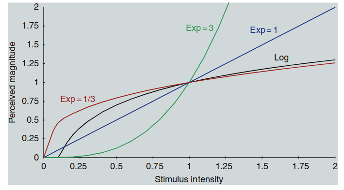
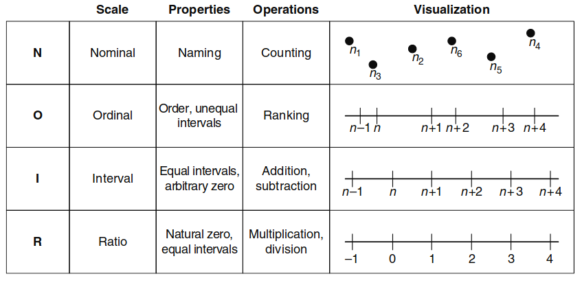
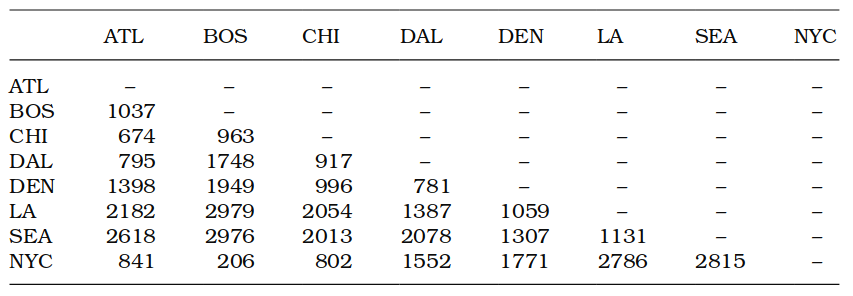
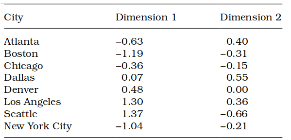
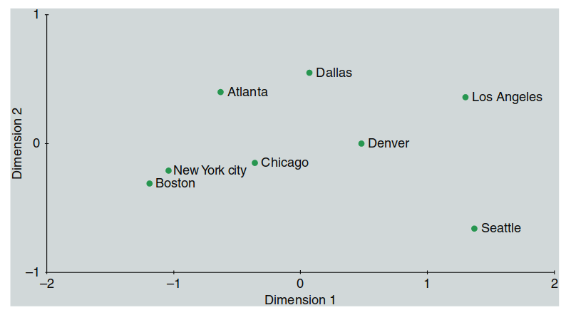

心理物理学
理解人类视觉系统的基本功能对于色貌模型的构建、实现和应用至关重要。尽管心理物理学原理的重要性不易察觉，但我们对人类色觉与色貌现象的认知大多来源于心理物理学实验。这些实验构成了色度学的基础，并推动了色貌模型的扩展。此外，心理物理学技术用于测试、比较和生成数据，帮助改进色貌模型。因此，理解心理物理学的基本原理对于正确使用和评价色貌模型至关重要。
心理物理学技术还有助于证明色貌模型的实施是否真正改善了系统性能。设计严谨的视觉实验能够准确量化通常被认为是主观的感知现象，这些实验结果在色彩测量和图像质量评价等领域具有重要价值。
本章内容包括实验设计与数据分析技术概述，帮助科学家准确评估视觉现象。具体内容涵盖观看环境的选择与设计、视觉实验的类型以及数据处理与分析。
实验设计包括阈值实验、匹配实验和量表实验等形式：
- 阈值实验：确定个体对刺激的最低感知水平。
- 匹配实验：要求观察者将一个视觉刺激调整到与目标匹配。
- 量表实验：对感知强度进行量化，通常用于建立感知的数值量表。
本章基于 ASTM 标准指南（ASTM, 1996）中的视觉实验设计，并参考了作者在罗切斯特理工学院的教学材料。此外，还推荐以下心理物理学文献：
- Gescheider (1985)：心理物理学基础
- Kingdom 和 Prins (2010)：现代心理物理学技术
- Bartleson 和 Grum (1984)：色彩与视觉研究
- Torgerson (1958)、Thurstone (1959) 和 Stevens (1975)：经典心理物理学文献
虽然部分经典文献已绝版，但可以通过图书馆或二手书店获取。此外，Engeldrum (1995) 针对图像质量的心理物理学应用进行了有趣的概述，而其 2000 年的著作提供了对心理物理量表技术及其应用的现代综述。
心理物理学在色彩科学中的应用广泛，用于评估色彩模型的表现与改进，并在色彩管理和数字成像等领域发挥着重要作用。掌握这些技术，有助于推动未来技术的发展，并提升科学家和工程师对视觉感知的理解。
译者注：罗老师（罗明）说：“我知道的各大公司的高层，首席视觉科学家，基本都是心理物理学背景出身”
2.1 心理物理学的定义
心理物理学是研究刺激的物理测量值与这些刺激所引发的感知和感觉之间关系的科学。它与传统学科（如物理学、化学和生物学）类似，属于一门独立的科学学科。心理物理学的工具用于量化通常被认为是主观的感知现象，但只要实验设计得当，其结果可以像尺子测量长度一样客观且量化。
心理物理学与其他物理测量的一个重要区别在于：心理物理测量的不确定性通常大于大多数物理测量。但只要这种不确定性得到正确处理，这些测量结果仍然具有重要意义。
心理物理学不仅用于研究人类的感知维度，有时也会涉及动物的感知研究。本书聚焦于色貌，因此讨论的重点是视觉心理物理学。
视觉实验的两大类
1. 阈值与匹配实验及其例子
阈值实验主要用于测量对微小变化的感知敏感度，如确定某一变化是否能被察觉，或两种刺激是否感知相等。以下是与色彩科学相关的具体示例：
颜色差异感知的阈值测量
-
通过最小可觉差 (Just Noticeable Difference, JND) 实验，研究者可以测量一个人是否能分辨出两种颜色之间的细微差异。例如，这类实验可以确定一个显示器在两个色块之间需要多大差异时，人眼才能察觉到它们的不同。
-
应用场景：评估印刷品与显示屏之间颜色匹配的准确性，确保颜色转换过程中的误差在不可感知的范围内。
图像压缩的无损检测
- 实验参与者观看经过压缩的图像，并与原始图像进行比较，判断它们是否感知上相同。这类实验可以帮助确定某种图像压缩算法是否在视觉上实现了“无损压缩”。
色貌模型的匹配测试
- 研究者可利用匹配实验验证两个色貌模型（如 CIECAM02 和 CIELAB）在实际应用中的表现是否存在感知差异。这类测试可用于评估色彩管理系统的效果。
2. 量表实验及其例子
量表实验用于建立物理量与感知量之间的关系，帮助我们理解不同物理参数如何影响颜色的感知。以下是几个常见的量表实验在颜色科学中的应用：
色彩浓度与感知彩度之间的关系
-
参与者观看不同浓度的颜色样品，并对其彩度进行评分。这些数据用于建立物理浓度（如墨水浓度）与感知彩度之间的数学关系。
-
应用场景：优化印刷系统，使其在低成本的情况下实现最佳彩度表现。
亮度与主观亮度感知的关系
-
研究者会展示不同亮度的样品，并要求观察者对其亮度感知进行评分。这类实验有助于量化物理亮度（如光源的亮度）与主观亮度感知之间的关系。
-
应用场景：调整显示设备的亮度输出，使其在不同环境下达到最佳可读性。
显示器像素密度与图像质量的感知
-
在此类实验中，观察者会评估不同像素密度下的显示质量，并给出感知评分。这些数据可以用于建立分辨率与感知质量之间的关系。
-
应用场景：帮助显示器制造商在提升分辨率与控制成本之间找到平衡。
如何选择合适的实验类型
在进行实验前，必须确定哪种类型的实验适合当前的应用场景。阈值实验和量表实验的用途不同，选择正确的实验类型至关重要。
-
阈值实验适用于测量感知变化的敏感度和刺激的可检测性。例如，这类实验可以用来判断一种图像压缩算法是否真正无损，或者两种色貌模型在某些应用中是否存在感知上的差异。
-
量表实验适用于需要建立刺激之间关系的场景。例如，量表实验可以用于量化印刷图像的感知质量与打印机分辨率（或显示器像素数）之间的关系。
在色貌建模中，量表实验的结果常用于将可测量的色度学量（如 CIE XYZ 三刺激值）与感知属性（如亮度、彩度和色相）建立联系。这些实验结果对于色貌模型的构建至关重要。
2.2 历史背景
在任何科学领域中，了解心理物理学的历史发展有助于更好地理解这一学科。尽管科学家们几个世纪以来一直在记录他们的感知观察，但心理物理学作为一个正式学科仅有不到200年的历史。在这段历史中，韦伯（Weber）、费希纳（Fechner）和斯蒂文斯（Stevens）的研究是重要的里程碑。
韦伯的研究
19世纪初期，E.H.韦伯探讨了提升重量时的重量感知问题。韦伯让受试者提起一个已知重量的物体，然后逐渐增加重量，直到受试者刚好能区分出新旧重量的差异。这种实验测量了感知重量变化的阈值。他发现，当初始重量增加时，达到感知阈值所需的重量变化也会同比增加。
- 设初始刺激强度为 \(I\)，达到阈值所需的变化量为 \(\Delta I\)，韦伯的实验结果可概括为：
$$ \frac{\Delta I}{I} = \text{常数} $$
这一定律现今被称为韦伯定律，适用于许多感知刺激。
通俗解释与应用
- 日常现象示例
如果你手中拿着几张纸，再加上一份20页的文件，你会清晰地感知到重量的变化。
但若你背着一满包书和纸，再放入同样一份文件，你可能察觉不到任何变化。因为当初始重量较大时，需要更大变化量才能达到感知阈值。
- 星星为何白天不可见
夜晚，星星的亮度（\(\Delta I\)）超过了黑夜背景亮度（\(I\)）的感知阈值，因此可见。
白天虽然星星亮度不变，但白天的背景亮度（\(I\)）极高，使得亮度比 \(\Delta I / I\) 降低，星星亮度未能达到感知阈值，因此不可见。
译者注：
韦伯定律不仅解释了重量和光强的感知，还广泛用于听觉、视觉等多种感知领域。该定律揭示了人类感知系统的比例关系，即对变化的感知并非绝对值，而是相对变化的比率。这种机制帮助我们在复杂环境中高效地处理感官信息。 诸位随着对颜色科学理解的深入，发现其很核心的一个点就是“相对”，这符合人类的感知，很多都是相对的，人类对绝对感知并不敏感——这和压缩编码密切相关，我觉得是智能的一个体现。> 这个topic随着后续颜色科学学习的深入会逐渐明晰
费希纳的研究
费希纳的研究是心理物理学发展的又一个重要里程碑。他基于韦伯的工作，推导出刺激强度与感知大小之间的数学关系。虽然费希纳的最初动机是通过证明心理活动可以用物理方法测量来解决“心灵-身体问题”，但他却意外地成为了心理物理学的奠基人，并于1860年发表了《心理物理学原理》（Fechner, 1966）。
费希纳的两个基本假设：
-
韦伯定律确实成立。
-
最小可觉差（Just Noticeable Difference, JND）可以视为感知单位。
费希纳的推导过程
-
韦伯的发现表明，物理尺度上的 JND 随刺激强度的增加而增加，并不相等，而是与刺激强度成比例。
-
费希纳的目标：通过转换物理刺激强度的尺度，使在感知尺度上所有 JND 具有相同大小。这需要求解韦伯定律对应的微分方程。
-
对数变换：由于 JND 在物理尺度上呈几何级数分布，因此通过对数变换，可以将这些变化转换为感知尺度上的等间隔增量。
其中，\(S\) 是感知大小，\(I\) 是物理刺激强度，\(k\) 是比例常数。
非线性特性与费希纳定律的局限
费希纳定律展示了感知随物理刺激的压缩性非线性关系。随着刺激强度的增加，感知的敏感度逐渐下降（曲线的斜率降低）。然而，并非所有感知过程都严格遵循费希纳定律。例如，有些感知函数呈现不同的非线性形式，这使得费希纳定律在某些情况下无法准确描述。
Carter 和 Silverstein（2012）进一步研究了阈值差异与更大感知差异之间的关系，发现简单的线性关系不足以描述感知变化，尤其是在复杂感知任务如色彩感知中，需要更加复杂的非线性模型。
图示说明：

图 2.1：费希纳定律与斯蒂文斯幂律函数的比较，展示了不同函数如何描述感知随刺激强度的变化。对数函数（费希纳）和不同幂指数（斯蒂文斯）展示了感知敏感度如何随刺激强度减弱。
Stevens 的研究
弥补费希纳结果的一般性缺失
Stevens（1961）发表了一篇题为“向费希纳致敬并推翻他的定律”的有趣论文，旨在解决费希纳（Fechner）理论中缺乏一般性的问题。Stevens 采用数量估计法（magnitude estimation technique）研究了30多种感知类型中物理刺激强度与感知量级之间的关系。
Stevens 的研究发现：
-
当感知量级的对数作为刺激强度对数的函数绘制时，不同感知类型呈现出不同斜率的直线关系。
-
在对数-对数坐标系中的直线关系，相当于线性坐标系中的幂函数关系。换言之，对数-对数坐标的斜率对应于线性坐标中的幂函数指数。
译者注：
费希纳的模型假设感知强度和刺激强度之间是对数关系，而 Stevens 发现不同类型的感知实际符合不同指数的幂律关系，这就是Stevens 幂律（Stevens power law）的核心。
图 2.1 所示三种幂律关系：
-
指数 < 1：感知量级表现出压缩型非线性（compressive nonlinearity），这是大多数感知的典型特征。
-
指数 = 1：此时幂律关系变为线性关系，但仅有少数感知与物理刺激强度呈线性关系，如短距离内的感知长度。
-
指数 > 1：预测出扩展型非线性（expansive nonlinearity），这种关系多见于可能导致痛感的刺激。例如，如果痛觉采用压缩型函数，随着刺激变得更危险，感知会逐渐不敏感，这对观察者极为危险。
译者注：由此可见，不同知觉类型这个感知是很不一样的，而fechner's的ln关系显然有很大偏差，不灵活，比如这个疼痛感受，应该是增长的。这就是Stevens的改进之处！
Stevens 幂律与色彩测量中的应用
Stevens 的幂律可用于模拟多种感知现象，在色彩测量的基本方面也能找到它的应用。例如，CIE XYZ 三刺激值与 CIELAB 色彩空间中的明度（lightness）和彩度（chroma）预测值之间的关系，采用了立方根压缩幂律非线性（cube-root compressive power-law nonlinearity）。
译者注：我们会在XYZ转Lab中（\(f(t)\)）看到它！
2.3 尺度层次结构（Hierarchy of Scales）
在推导感知尺度时，理解所产生尺度的性质至关重要。不同的心理物理学技术可能会生成在数学上只能有限应用的尺度。在这种情况下，避免对这些尺度施加不适当的数学操作非常重要。常见的四种尺度按数学运算能力和复杂度的递增顺序为：名义尺度、顺序尺度、区间尺度和比率尺度。
名义尺度是最简单的形式，基于类别名称进行分类。对于颜色的名义尺度，可以将颜色分为红色、黄色、绿色、蓝色和中性色等类别。此类数据只能进行命名，无法进行其他数学操作。
案例：对房间内的人按身高赋名。例如，若某人高度相同，你可以都命名为“Joe”。但这个尺度没有关于谁更高或更矮的信息，只能判断是否相同。
顺序尺度将元素按某种属性的大小进行升序或降序排列，但不表示相邻元素之间的差异大小。例如，可以按色调对色卡进行排序，然后根据明暗程度排列同一色调下的样本，如深绿、中绿和浅绿。
案例：为房间内的人按身高排序。如果第一个人“Joe”高度为0，则比他高的人赋值为10。若第三人高于Joe但低于第二人，则赋值为介于0到10之间的值。然而，这里无法得知具体的高度差是多少，只能进行排序。
区间尺度具有等间距的特点，即在尺度上任意两个点之间的差异都可以用相同的单位衡量。然而，区间尺度没有有意义的零点。摄氏和华氏温标都是区间尺度，尽管存在“0度”，但它并不表示“没有温度”。此类数据支持加法和减法运算。
案例：在区间尺度上测量身高时，假设Joe的身高为0。其他人的高度可以基于Joe的高度用±厘米表示。例如，如果A的身高为+3厘米，B为-2厘米，则可以得知A比B高5厘米，但无法确定他们的绝对身高。
比率尺度除了具备以上所有尺度的特性外，还具有有意义的零点。因此，可以对比率尺度的数据进行乘法和除法运算。
案例：正常情况下，人们的身高用比率尺度测量，如Joe为182厘米，A为185厘米，B为91厘米。由于比率尺度有自然零点，我们可以说Joe是B的两倍高（182厘米 ÷ 91厘米 = 2）。
操作总结
- 名义尺度：只能进行命名和分类。
- 顺序尺度：支持排序和逻辑比较。
- 区间尺度：支持加法和减法运算，但无自然零点。
- 比率尺度：具备所有前述运算能力，且支持乘法和除法。
译者注：不同的尺度类型在颜色科学中的应用非常广泛。例如，名义尺度用于颜色分类系统，而顺序尺度适用于按明度或色调排列的色彩样本。在高级的色彩模型中，如CIE Lab*色彩空间，可以看到区间尺度的运用，而在涉及颜色数量和比例的场景中，如图像处理中的亮度计算，则需要使用比率尺度。

图 2.2：尺度的层次结构与对应的数学操作示意。
2.4 阈值技术（Threshold Techniques）
阈值实验旨在确定刺激中刚好可察觉的变化，这通常被称为JND（just noticeable difference，最小可觉差）。阈值技术用于测量观察者对特定刺激变化的敏感度。绝对阈值定义为从无刺激到刚好可察觉变化的差异，而差异阈值表示在某个大于0的刺激水平上刚好可察觉的差异。这些阈值通常以测量刺激的物理单位报告，例如亮度阈值可以用cd/m²（坎德拉每平方米）来表示。敏感度定义为阈值的倒数，因为较低的阈值意味着更高的敏感度。阈值技术非常有用，例如定义人眼对颜色差异的视觉容忍度。
阈值实验类型
以下介绍了几种基础的阈值实验类型，按实验设计复杂度和数据实用性递增的顺序排列。针对特定应用，这些技术还有许多变体。实验设计的目标通常是尽可能减少观察者对结果的主观影响，从而降低个人判断标准的干扰。然而，这通常需要更复杂的实验流程。
常见的阈值技术包括：
-
调整法（Method of Adjustment）
观察者可以主动调整刺激强度，直到找到刚好可察觉的变化。这种方法直观且简单，但容易受到观察者主观判断的影响。 -
极限法（Method of Limits）
研究者逐步增加或减少刺激强度，观察者在过程中的某个点报告感知到变化。这种方法依赖于顺序测试，可以减少实验者的干扰。 -
常量刺激法（Method of Constant Stimuli）
研究者随机呈现多个不同强度的刺激，并要求观察者判断是否能感知到差异。这种方法通过随机化消除了顺序偏差，但实验时间较长。
译者注：在颜色科学中，阈值技术广泛应用于色彩和亮度的差异感知测试。例如，在色差测量和标准化过程中，常量刺激法常用于验证人眼对微小颜色变化的敏感度。这在色彩管理、印刷、显示技术等领域具有重要应用价值，因为这些领域需要确保设备和人类视觉系统对色彩变化有高度一致的响应。
调整法（Method of Adjustment）
调整法是最简单直接的阈值测量技术。观察者可以控制刺激的强度，逐渐调整至刚好可察觉的水平（绝对阈值）或与起始水平相比刚好不同（差异阈值）。最终的阈值通过多个观察者或多次试验的平均值确定。
优点：简单且快速。
缺点：观察者控制刺激，可能因个体判断标准的不同而产生偏差。例如，当观察者从高强度向低强度调整时，可能因为适应性造成阈值较高的偏差。这种方法通常用于获取初步阈值估计，以便设计更复杂的实验。此外，它在颜色匹配实验中也很常用，尤其是用于颜色貌研究中的非对称匹配实验。
颜色科学中的应用：调整法常用于色貌模型中的匹配实验。在非对称匹配中，不同光源或显示条件下的颜色必须进行调整以达到视觉上的一致，从而测试模型的准确性。
极限法（Method of Limits）
极限法比调整法稍复杂。实验者按递增或递减顺序呈现一系列预定强度的刺激。
-
递增序列：从不可察觉的刺激开始，逐步增加强度，直到观察者报告察觉到刺激。
-
递减序列：从显而易见的刺激开始，逐步减少强度，直到观察者报告无法察觉。
阈值为多个递增和递减序列中刺激强度转变点的平均值。通过这种双向序列，可以减少适应性效应的影响。然而，观察者的主观判断仍会对结果造成一定影响。
颜色科学中的应用：极限法常用于测量人眼对颜色和亮度变化的敏感度。例如，在显示器亮度校准中，可以采用此法确定从不可见到可见的亮度差异。
常量刺激法（Method of Constant Stimuli）
在常量刺激法中，实验者选择多个接近阈值的刺激强度（通常5到7个），并随机多次呈现。通过分析每个强度水平被感知的频率，可以绘制心理测量曲线（psychometric function），从中确定阈值及其不确定性。通常，阈值定义为观察者在50%的试验中感知到刺激的强度。
响应类型：
-
是–否法（Yes–No Method）：观察者报告是否察觉到刺激。曲线上的阈值为50%的“是”响应比例。
-
强制选择法（Forced-Choice Procedures）：观察者需要在两个时间或空间间隔中选择刺激出现的间隔。如果不确定，也必须作出猜测。阈值定义为正确率为75%的强度水平（对应于50%的检测概率）。这种方法消除了观察者主观判断的影响。
颜色科学中的应用：常量刺激法常用于色差检测，帮助评估两个颜色之间的最小可觉差。这在印刷和显示设备的色彩管理中尤为重要，以确保输出的颜色满足用户的期望。
阶梯法（Staircase Procedures）
阶梯法是强制选择法的变体，专门用于测量心理测量曲线的阈值点。该方法特别适合于自动化实验。若观察者的响应正确，刺激强度保持不变；若响应错误，则增加刺激强度。当观察者连续三次正确响应时，刺激强度减小，直到达到所需的精度。此方法通常通过多个独立的阶梯程序并行运行，以增加实验的随机性。
颜色科学中的应用：在视觉实验中，阶梯法常用于测试颜色辨别能力。例如，在测试观察者能否区分微小的色调变化时，可以通过此法准确定位人眼的颜色阈值。
Probit分析与Logit分析
生成的心理测量曲线数据可以通过Probit分析来拟合累积正态分布，从而确定阈值及其不确定性。与之类似的Logit分析则使用逻辑函数进行拟合，并适用于频率范围为0到1的情况。在合理的视觉数据下，Probit和Logit分析的结果几乎一致。
颜色科学中的应用：这些分析方法常用于校准色彩感知数据的数学模型。例如，在CIE色彩模型的开发中，通过Probit分析优化色彩感知数据的拟合精度，使模型能够更好地反映人类的感知结果。
2.5 匹配技术（Matching Techniques）
匹配技术与阈值技术类似，但目标是确定何时两个刺激在感知上没有差异。有时，通过匹配结果的变异性可以估算出阈值。这些实验为CIE比色系统奠定了基础，通过同色异谱匹配（metameric matches）推导出颜色匹配函数。例如，当一种颜色通过红、绿、蓝三种基色光的加法混合与其匹配，但光谱能量分布不同，这样的匹配就被认为是同色异谱的。这些匹配反映了人眼的颜色响应特性，为构建三刺激值比色系统奠定了理论基础，这将在第三章详细介绍。
非对称匹配（Asymmetric Matching）
在颜色适应和颜色貌研究中，非对称匹配是常用手段。匹配通常发生在不同的观看条件下，例如，在自然光下观察的颜色与在白炽灯下观察的颜色之间进行匹配，从而得到对应的颜色对。这类数据的积累对于开发色貌模型至关重要，使得这些模型能够有效预测观看条件变化对颜色的影响。在某些情况下，单眼匹配（haploscopic experiment）也被用于此类研究，一只眼睛在一种观看条件下观察测试刺激，而另一只眼睛在不同条件下观察匹配刺激，观察者同时查看并完成匹配。
记忆匹配（Memory Matching）
记忆匹配涉及观察者根据记忆中的颜色进行匹配，通常用于研究不同观看条件如何影响颜色记忆的准确性。这类匹配实验有时用于探索人们对理想无色（如灰色）或独特色调（如纯红色）的记忆稳定性。这种匹配技术不仅揭示了记忆中的颜色再现与实际颜色之间的关系，还帮助我们理解视觉系统在不同环境中的颜色记忆可靠性。
2.6 一维尺度测量（One-Dimensional Scaling）
尺度测量实验旨在研究感知量级与刺激强度的物理测量之间的关系。在一维尺度测量中，假设感知属性和刺激的物理变化均是一维的，观察者只需对单一感知属性作出判断（如比较两个样本的亮度，或判断两幅图像的差异质量）。常见的一维尺度测量方法如下：
排序法（Rank Order）
观察者根据某一感知属性的大小对一组样本进行升序或降序排列。多个观察者的结果可以取平均值后重新排序，得到一个序数尺度。若要获得区间尺度，则需对数据进行进一步假设和分析，例如将排序结果视为成对比较数据的一部分，以此推导出更精确的尺度。
图形评分法（Graphical Rating）
图形评分法用于直接确定区间尺度。观察者在一维线上标记其感知的大小。例如，在亮度测量中，线的一端标为“白”，另一端标为“黑”。当观察者感知到的灰色样本位于白色和黑色之间时，会在相应位置进行标记，反映其感知的中间位置。该方法基于视觉感知的线性关系，能够较为准确地反映短距离内的感知差异。
类别尺度法（Category Scaling）
类别尺度法要求观察者将大量样本分入多个类别，并记录每个样本被归入某一类别的次数。这种方法在样本数量较多时十分有效，但前提是样本之间的差异足够小，以避免不同观察者或同一观察者在不同时间将样本分入完全不同的类别。若假设感知量级呈正态分布，基于分类判断法（Torgerson, 1954）可以从类别数据推导出区间尺度。
成对比较法（Paired Comparisons）
成对比较法用于处理样本数量较少的情况。所有样本以两两组合的形式呈现给观察者，要求其判断哪个样本在某一属性上更强。通过计算一个样本被判定为“更强”的比例，可以根据比较判断法（Thurstone, 1927）将其转化为区间尺度。该方法的统计模型能提供对样本间差异的显著性评估。
分割尺度法（Partition Scaling）
分割尺度法通过等分样本间的感知差异来构建区间尺度。例如，观察者需要选择一个样本，使其与样本A和B的感知差异相等。通过多次等分操作，可以逐步建立完整的区间尺度。
数量估计与生成法（Magnitude Estimation or Production）
数量估计法要求观察者根据感知量级为样本分配数值，而数量生成法则要求观察者根据给定的数值生成匹配的感知刺激。这些方法是少数能够直接生成比率尺度的技术之一。在多维尺度测量（MDS）中，这些数据也可用于测量样本之间的感知差异。
比率估计与生成法（Ratio Estimation or Production）
比率估计与生成法要求观察者根据给定的比例选择或生成匹配的样本。例如，观察者可能会被要求找到一个样本，使其在某一属性上为标准样本的二分之一或两倍。尽管该方法在实践中较为复杂，但它能直接生成比率尺度。
这些一维尺度测量方法广泛应用于颜色科学中的各种研究任务。例如，在CIE色彩系统的开发中，成对比较法和类别尺度法被用于确定颜色匹配函数；而在色彩貌模型的研究中，数量估计法和分割尺度法帮助描述人类对亮度或色调的感知特性。通过这些方法，我们得以准确量化感知与物理强度之间的关系，使色彩管理和显示设备的性能更符合人眼的感知结果。
2.7 多维尺度测量（Multidimensional Scaling, MDS）
多维尺度测量（MDS）是一种类似于一维尺度测量的方法，但它无需假设待测属性是一维的。MDS通过分析数据本身来确定感知属性的维度。在MDS中，数据通常是样本之间的相似性或差异性，输出结果为一个多维的几何配置，展示各刺激之间的感知关系，类似于地图上的位置关系。
获取差异性数据的实验
这些差异性数据可以通过成对比较或三元组合实验获得：
- 成对比较法
所有样本按照可能的配对组合呈现给观察者，要求其估计每对样本之间的感知差异程度。这些配对的估计值可作为MDS分析的输入数据。
- 三元组合法
观察者判断每组三个样本中哪两个最相似，以及哪两个最不同。通过记录每对样本被判断为“最相似”或“最不同”的频率，这些数据可转换为相似性或差异性矩阵，用于MDS分析。
MDS的分析类型与技术细节
MDS方法分为度量型（metric）和非度量型（non-metric）。度量型MDS需要区间尺度数据，而非度量型MDS只需要序数尺度数据，输出结果均为区间尺度。这些分析需要根据数据选择距离度量方式（如欧几里得距离或城市街区距离）并评估拟合优度（stress）。
表 2.1：美国城市之间的距离矩阵。

通过表 2.1 中的距离矩阵，MDS可以将数据转换为多维空间配置，展示出各城市之间的关系。
表 2.2：美国城市的二维坐标输出。

表 2.2 展示了基于MDS分析的二维坐标输出。通过这些坐标，可以将每个城市在二维空间中绘制出来。

图 2.3：基于MDS分析的美国地图，从城市间的距离数据生成。
解释与应用
MDS分析能够揭示颜色感知的复杂结构。例如，与生成地图的过程类似，MDS也可用于分析色调、亮度和彩度之间的关系。这些分析结果不仅支持色彩模型的开发，还帮助我们理解不同颜色之间的感知差异，优化颜色管理系统的性能。
2.8 心理物理实验的设计（Design of Psychophysical Experiments）
前文概述了用于测量心理物理阈值和尺度的一些技术。然而，在设计心理物理实验时，还需要考虑许多额外的因素，尤其是与颜色貌相关的实验。这些因素会对实验结果产生重大影响，并且也是推动色度学向色貌模型（Color Appearance Models）扩展的关键所在。
完整描述所有视觉实验中的变量足以构成多本书的内容。本节简要列出一些需要特别关注的关键因素，以便引起注意，并在后续章节中深入讨论色貌现象的相关问题。
心理物理实验中的重要因素：
-
观察者年龄
-
观察者经验
-
观察者数量
-
色觉缺陷筛查
-
观察者视力
-
实验指导
-
观察情境
-
反馈机制
-
奖励机制
-
照明水平
-
光源颜色
-
光照几何结构
-
背景条件
-
周围环境条件
-
眼动控制与记录
-
适应状态
-
任务的复杂性
-
实验控制
-
重复率
-
范围效应（Range effect）
-
回归效应
-
图像内容
-
图像数量
-
观察时间长短
-
观察次数
-
观察者的动机
-
认知因素
-
结果的统计显著性
这些变量及其相互影响对实验结果有深远的影响，因此在实验设计和结果解释时必须加以严格规范和控制。这些因素不仅影响实验的准确性和可靠性，也会对实验结果的解读及其在实际应用中的使用产生重要影响。无论是执行实验还是应用实验结果，这些问题都应予以仔细考虑，以确保实验设计的科学性与结果的可用性。
2.9 色貌模型中的重要性（Importance in Color Appearance Modeling）
深入理解心理物理实验过程，对于理解色貌模型的需求、开发及评估至关重要。大量关于人类视觉系统的信息，正是通过心理物理实验获得的，这些内容已在第一章中回顾。此外，第三章将介绍的色度学也是基于心理物理学的原理。
心理物理实验的结果构成了研究色貌现象、色彩适应以及色貌模型测试的基础，这些主题将在第六章、第八章和第十七章中详细讨论。简单来说，若没有大量的心理物理实验，就无法获得构建和应用色貌模型所需的信息。
色貌模型的开发与完善依赖于这些实验数据，这些数据不仅帮助我们更好地理解视觉系统对颜色的响应，还支持了色彩科学在实际应用中的不断发展，如显示设备校准和色彩管理系统的优化。
译者注：本章内容比较抽象，需要在设计实验时候反复思考和实践才能真正理解和觉察。